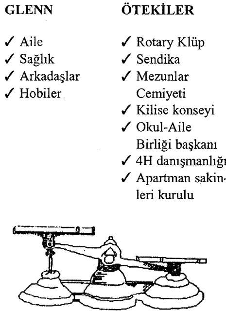

İşinizi ya da dostluklarınızı riske atmadan nasıl hayır diyebileceğinizi öğrenmek ister misiniz? Tongue Fu büyük ölçüde, hem kendi haklarınıza hem de aynı zamanda başkalannınkine saygı göstermeyi öğrenmekle ilgilidir. Bu kolay değildir. Ne zaman kendinizi, ne zaman başkalarını başa alacaksınız?
Eğer başka insanlara sürekli boyun eğip evet derseniz ilişkileriniz pek sağlıklı olamaz. Eğer sadece kendi duygularınızı dikkate alırsanız da sağlıklı ilişkiler beklemeyin. Başarılı ilişkiler kurup sürdürebilmenin anahtarı ihtiyaçları dengede tutabilmektedir. Bunu yapmak kuşkusuz söylemek kadar kolay değildir. O nedenle, ne zaman insanların isteklerine ayak uydurup evet demenin, ne zaman da kendi görüşünüzde ısrar edip hayır demenin uygun olduğunu açıklığa kavuşturmada size yardımcı olabilecek elle tutulabilir bir araç geliştirdim.
Sizi karşıt yönlere çeken zorlu bir kararla karşı karşıya kaldığınızda, yanda görülen eski moda teraziyi gözünüzün önüne getirin. Karşılanmakta olan ve karşılanamayan ihtiyaçları belirleyip ayrı ayrı terazinin kefelerine yerleştirin. Böylece kime özen gösterdiğinizin ve kime göstermediğinizin nesnel bir muhasebesini elde etmiş olursunuz. Eğer terazi sizden yana ağır basıyorsa, o zaman diğer kişiye de istediklerini vermenin zamanı belki gelmiş demektir. Eğer sürekli kendi ihtiyaçlarınızdan ödün veriyorsanız, o zaman bir isteği geri çevirmek bencillik değil akıllılık olur.
Bencil mi, Özverili mi?
"Bencillik; canınızın istediği gibi yaşamak değil, başkalarından sürekli kendi istediğiniz gibi yaşamalarını talep etmek demektir."
- OSCAR WILDE
Örneğin, birisi size bir şey yapmanız için yalvarıyor ve siz iki karşıt yöne çekildiğinizi hissediyorsunuz. Birkaç dakika ara verip terazinin kefelerini doldurun. Tamamlanmış resim kabul edebileceğiniz bir yanıta ulaşmada size yardımcı olacaktır. Eğer kendi çıkarlarınızı dışlama pahasına diğer kişinin çıkarlarını dikkate aldığınız aşikârsa, o zaman hayır demeniz yerinde olacaktır. Yok eğer son dönemde diğer kişinin istekleri ihmal edilmişse, belki de şimdi evet demenin zamanıdır.
Atölye çalışmalarımızdan birinde, Glenn adında birisi söz alıp teorik olarak bu yaklaşımı onayladığını, ama gerçek yaşamda uygulamada oldukça zorluk çektiğini belirtti. "Ben her zaman müzikaldeki 'Hayır diyemem' şarkısını söyleyen o karaktere benzedim. İşleri hep en meşgul insanlara verirseniz yapılmasını güvence altına almış olursunuz, şeklindeki tavsiyeyi duymuşsunuzdur. İşte ben öyle birisiyim. Haftanın her akşamı bir toplantım var. O kadar çok örgüte üyeyim ki artık izleyemez oldum. Motor çoktan teklemeye başladı, ama ne zaman geri durmaya çalışsam, birisi gelip yeni bir projeyi üstlenmemi rica ediyor."

Sınıfımız Glenn'in durumunu sınıf projesi olarak ele almayı benimsedi. Bir katılımcı, kendisinden değişik yükümlülüklerini saymasını isterken, diğeri bunları resimde gördüğünüz gibi terazinin üzerine çi-ziktirdi. Glenn gerçekten de birçok örgüt için çalışıyordu. Ya kendi ihtiyaçları? Sağlığı nasıl gidiyordu? Dostları ve ailesiyle ilişkileri nasıldı? Hobileriyle uğraşacak zamanı oluyor muydu? Zamanını gerçekten istediği gibi mi geçiriyordu, yoksa hayatı kontrolden çıkmış mıydı?
Glenn, terazinin bir kefesindeki sosyal yükümlülüklerinin uzun listesini diğer kefedeki kişisel faaliyetlerinin sıska listesiyle karşılaştırdığında, kendi açısından sorunun bütün zamanlar için çözülmüş sayılabileceğini belirtti. "Bunu zihnimden yapmaya çalıştığımda kafam karışıyordu. Üzerinde düşünmek işi daha da karmaşıklaştırıyordu, oysa kağıda dökmek her şeyi açıklığa kavuşturdu. Bu andan itibaren bu teraziyi kullanarak, anın baskılarına boyun eğip faturasını ileride ödemek yerine, bilgiye dayalı kararlar alacağım."
İşinizi, Dostunuzu ya da Ailenizi Kaybetmeden Hayır Deyin
"Kişilerarası ilişkileri yürütmede başlıca üç olası yaklaşım vardır. Birincisi sadece kendinizi dikkate almak ve ötekileri hiçe sayarak sırtlarına binmektir. İkincisi her zaman kendinizden önce başkalarına yer vermektir. Üçüncü yaklaşım orta yoldur; birey önce kendisine yer verir ve ötekileri dikkate alır."
- JOSEPH WÖLPE
Glenn sözünü şöyle sürdürdü: "Şimdi bu ağır programı birlikte çalıştığım öteki arkadaşlara ters düşmeden nasıl hafifletebileceğim sorusu var." Önemli bir nokta. İstekleri, kişisel ya da mesleki ilişkilerinize zarar vermeden nasıl geri çevirebilirsiniz? Aşağıdaki dört adımı kullanarak hiç endişeye kapılmadan hayır diyebilirsiniz.
1. "Bu konuda düşünmek için biraz zamana ihtiyacım var" deyin. Eğer baskı altında kaldığınızda evet deyip sonra "Nereden bu işe karıştım?" diye pişman olmak gibi bir huyunuz varsa, zaman tüketici ek sorumlulukları anında kabul etmeyeceğiniz konusunda kendinize söz verin. Müzakereciler, insanların hemen cevap vermeye zorlandıklarında olağan durumda kabul etmeye yanaşmayacakları ödünleri verdiklerini iyi bilirler. Zihinsel atak taktiklerine hazırlıksız yakalanmayın. Hangi ihtiyaçları karşılamayı tercih edeceğinize, kendinizle baş başa kaldığınızda duru bir kafayla karar verin.
Geri durmanızı önermediğimi anlamanızı isterim. Vurgulamaya çalıştığım, gerçek yaşamda insanın bir gecede kesin kararlı hale gelmesinin kolay olmadığıdır. Yıllardır öyle olmuşlarsa, insanların anında paspas olmaktan çıkabileceğini söylemek gerçekçi değildir. Bu ilk adım, sırtınıza ek sorumluluklar yükleyip kendinizi çökertmeden önce iki kez düşünmenize olanak verir.
2. Hayır ve evet deyin. Söz konusu istemi geri çevirin ve işinize daha çok gelen bir alternatif önerin. Örneğin, eğer Glenn'e meslek örgütünde yöneticilik önerilseydi, bu emek yoğun görevden affedilmesini rica edip, bunun yerine örgütün aylık dergisine makale yazarak katkıda bulunmayı önerebilirdi. Bu işi diğer yöneticilerle işbirliğine gerek kalmadan evinde de yapabilirdi.
3. Hayır deyin ve sorunu başka araçlarla çözün. Kendinizin söz konusu olamayacağmı belirtin ve yerinize iyi iş çıkarabilecek bir başkasını önerin. Siz de, olayın bizzat içinde bulunmasanız bile, uzmanlığınızla destek olup arzu edilen sonuçların üretilmesine yardımcı olabilirsiniz.
4. Kibarca, nazik bir şekilde ve suçluluk duygusuna kapılmadan hayır deyin. Eğer hep veriyor ve hiç almıyorsanız, hiç düşünmeden hayır deme hakkına sahipsinizdir. "Öneriniz beni çok mutlu kılıyor ve ben akşamlarımı ve hafta sonlarımı aileme ayırmaya söz vermiş bulunuyorum."
Israr ederlerse konuşmayı yapıcı şekilde sürdürmek için Kullanılacak Sözleri uygulayın. "Örgütü yürütmek için gönüllülere ihtiyacınız olduğunu biliyorum ve ben eşime verdiğim söze bağlı kalmak istiyorum" demeniz, hem onların duygulanna saygı gösterdiğinizi, hem de sizin kendi ihtiyaçlarınızı ortaya koyar. Unutulacak Sözler kullanarak - "Özür dilerim, ama bunu yapmam hiçbir şekilde mümkün değil. Bu son yıllarda ne kadar çok şey yüklenmiş olduğumu görmeniz gerekir"- insanları geri çevirmek sadece yabancılaşma yaratır.
Nezaket Sürekli Boyun Eğmek Demek Değildir
"Alçakgönüllü olmak altta kalmak zorunda olmak anlamına gelmez."
- MAYA ANGELOU
Nazik olmak, her zaman yol alabilmek için ayak uydurmak zorunda olduğunuz anlamına gelmemelidir. Her ikisi de ev kadını olan Ann ile kapı komşusu Jackie beş yıldır iyi arkadaştılar, birlikte oyun gruplarına katılır, araba gezilerine çıkar, sinemaya giderlerlerdi. Daha sonra Jackie bir pastanede iş buldu; sabah dokuzdan öğleden sonra ikiye kadar çalışacaktı. Üç çocuğu okuldan döndüğünde evde olabileceği için çok memnundu.
En azından teoride durum böyleydi. Birinci haftanın sonunda Jackie telefon edip Ann'e pastane sahibinin kendisinden saat ikiden sonra bir süre daha çalışmasını istediğini söyledi; acaba kendisi dönünceye kadar Ann çocuklara göz kulak olabilir miydi? Ann seve seve yardımcı olacağını söyledi.
Sonraki hafta bir başka acil durum, daha sonraki hafta gene bir başka olay Jackie'yi işte alıkoydu ve Ann farkına varmadan neredeyse her gün Jackie'nin çocuklarına bakar hale geldi. Jackie onun yardımseverliğinden yararlanıyor ve her zaman kendisi için hazır olacağını var sayıyordu.
Ann, bu açmazını benimle tartıştı. Dadı rolünden artık bıkmıştı ama arkadaşını kaybetmek de istemiyordu. Kendisine ihtiyaçlarını tartıp karşılaştırmasını ve dengenin ne kadar bozuk göründüğüne bakmasını önerdim. Jackie'nin ihtiyaçlarını karşılayabilmek için çaba gösterirken kendisinin ve çocuklarının çıkarları ihmal ediliyordu. Bu konuyu açık olarak konuşmayı duyarsızlık saymamalı, tersine akılı bir davranış olarak görmeliydi.
Ann, hem kendi hakkını korumaya, hem de aynı zamanda Jackie'nin durumuna bir çözüm getirmeye karar verdi. Aynı mahalledeki bir genç kıza Jackie'nin çocuklarına göz kulak olup olamayacağını sordu. Liseli kız harcayacak bir miktar para kazanma olanağı çıkmış olmasına çok memnun oldu. Ann, sonra oturup Jackie ile konuştu; ona kendisine yardımcı olmaktan mutlu olduğunu, ayın birinden itibaren dışarıdaki işlerini yapabilmek ve çocuklarıyla meşgul olabilmek için öğleden sonralarının boş kalmasını arzu ettiğini anlattı. Kendisine çocuk bakıcısı genç kızın adını ve telefon numarasını verdi ve iki blok ötede oturan kızın, zaten Jackie'nin çocuklarını tanıdığı ve onlardan hoşlandığı için istekli ve ucuza çalışmaya hazır olduğunu belirttiğini söyledi.
Hayır Diyemem
"Bir zaman, para, enerji ya da destek talebine her hayır dediğinizde, başka bir şeye evet diyorsunuzdur."
- MAGGIE BEDROSIAN
Bu noktada her zaman dinleyicilerden birisi şunu sorar: "Talebini reddettiğimde kişi bana kızarsa ne olacak?" Life Is More Than Your To-Do List (Hayat Yapılması. Gereken İşler Listenizden Daha Fazla Bir Şeydir) adlı harika kitabında Maggie Bedrosian, eğer her hayınn ardında bir evet yattığını, bir şeye sırtınızı çevirdiğinizde her zaman yüzünüzü başka bir şeye döndüğünüzü bilirseniz, "maalesef" derken kendinizi çok daha rahat hissedeceğinizi söyler. Bazı insanlar çılgınca herkes için her şey olmaya çabalar, ama sonunda en özen gösterdikleri insanlar için hiçbir şey olamadıklarını görürler. Sizin için gerçekten önemli olan ne? Zaman ve enerjiniz sınırlı kaynaklardır. Onları önemsiz şeyler için heba etmeyin. Sizi değerli zamanınızı gerçek önceliklerinize hasretmekten alıkoyacak taleplere "Özür dilerim" diyebilmek için, en kuvvetle hissettiğiniz varlık nedeninizi belirleyin.
Kendisine bu tekniki öğrettiğim için bir bayan bana çok teşekkür etti, aşırı talepkâr bir kadın olan annesine kendini kabul ettirmede çok yararını görmüş. Rhoda gülerek şunları anlattı: "Şu deyişi hiç duydunuz mu: 'Annemin işi suçluluk seyahatleri için seyahat acenteliğidir.' Benim annem de böyledir. Her gün telefon edip bir şey ister. Kendisine hayır demekten çekindiğim için beni istediği gibi kullanmaya alışmıştı. Geçen hafta telefon edip kendisini alışverişe götürmemi istedi. O gün hiç vaktim yoktu, cumartesi günü kızlarımla birlikte çıktığımızda kendisini almamızı teklif ettim. Bu hoşuna gitmedi ve o alışılmış tiratlarına başladı.
"Terazinin kefelerini karşılaştırma tekniki yıllar içinde annemin isteklerine nasıl sürekli boyun eğmiş olduğumu görmemi sağlamıştı. Annemi çok severim, ama bu durumda isteğini karşılayamayacağımı söylemek dürüst davranmak olacaktı. Kendisine yapmam gereken işleri anlattım, onu ancak hafta sonu alışverişe çıkarabileceğimi ya da mutlaka o gün gitmeyi zorunlu görüyorsa kendisine bir araba çağırabileceğimi söyledim. Biraz homurdanıp bazı şeyler söyledi, ama ben kendimi hiç suçlu hissetmedim, çünkü terazi sayesinde isteğini geri çevirmekte haklı olduğumu görmüştüm.
Ne İçin Israr Edeceğinizi İyi Bilin
"Bir şey için dik duramazsanız her şey için yere düşersiniz:'
- ANONİM
Ne için ısrarlı olacaksınız? îlk yüzyılın Yahudi bilgelerinden Hillel şöyle demişti: "Kendim için değilsem, kim benim için? Sadece kendim içinsem, ben neyim? Şimdi değilse, ne zaman?" Bu ebedi sözler, başkalarına hizmet ederken kendimize hizmet etmenin önemini özlü bir şekilde dile getiriyor. Eğer ne zaman ve nasıl hayır diyeceğinizi öğrenemezseniz, kendinizi feda etmenizin faturası çok yüksek olacaktır.
The Joy Luck Club (Neşeli Talih Klübü) adlı çok satan kitabın yazan Amy Tan şunu gözlemlemiş: "Kendimi yitirmem birden bire olmadı. Yüzüm yıllar içinde giderek silindi." Karşılamanız gereken ihtiyaçlan adil bir dengede tutmaya özen gösterirseniz, evet demeye zorlandığınızda yere serilmek durumunda kalmazsınız.
HAYIR DEMEK İÇİN EYLEM PLANI
Firmanız yerel hayırseverlik işlerine en çok katkıda bulunanlardan biri olmakla övünüyor. Bu yıl katkılarını yüzde yüz artırmak istiyor ve bölüm başkanınız bürodaki herkesi yüksek bir bağışta bulunmaya zorluyor. Çabalarına değer veriyorsunuz, ama maaşınızın hiç de küçük olmayan bir bölümünü daha önce bir başka gönüllü kuruluşa bağışlamış bulunuyorsunuz. Yöneticiniz sizden para istediğinde nasıl bir yanıt verirsiniz?
UNUTMANIZ GEREKEN SÖZLER
Kampanya liderinin ricada bulunmasının sizi zor duruma düşürdüğünü düşünürsünüz. "Nasıl hayır diyebilirim? Büroda benden başka herkes bir şey veriyor."
Aforoz edilme endişesi düşüncelerinize egemen olur, sürüden ayrılmak istemezsiniz. "Çalışma arkadaşlarım ne der? Cimri olduğumu düşünecekler."
Kampanya başkanı hayır yanıtı almak istememektedir. "Bağışta bulunmadığım için kötü birisi olduğumu düşünecek. En iyisi biraz verip başımdan savayım."
KULLANMANIZ GEREKEN SÖZLER
İhtiyaçlar terazinize bir göz atıp dengede olup olmadığına bakarsınız.
"Hayır işlerinin desteklenmesi gerektiğini biliyorum ve bağışta bulunacağım grubu kendim belirlemek hakkına sahibim."
Saygılı bir şekilde hayır demenin kendi açınızdan yerinde olacağı sonucuna varırsınız. "Kampanyanızın başarılı olmasını diliyorum ve ben önceden başka bir hayır işini desteklemeye söz vermiş bulunuyorum."
En kuvvetli hissettiğiniz varlık nedeninizi hatırlayarak bencil davranmadığınızı düşünür ve baskıya boyun eğmezsiniz. "Yerel hayır işlerini desteklemenin önemli olduğuna katılıyorum ve kendi tercih ettiğim bir kuruluşa bağışta bulunmuş olmamın nedeni de bu."
"Sohbetlerdeki talihsizlik şudur ki, insanlar sözlerini nasıl sona erdireceklerini bilmeden sürdürürler."
- SAMUEL JOHNSON
Yirmi Üçüncü Bölüm